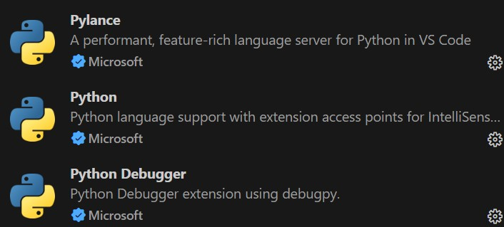
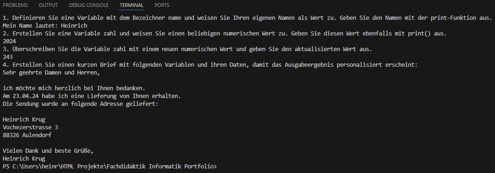
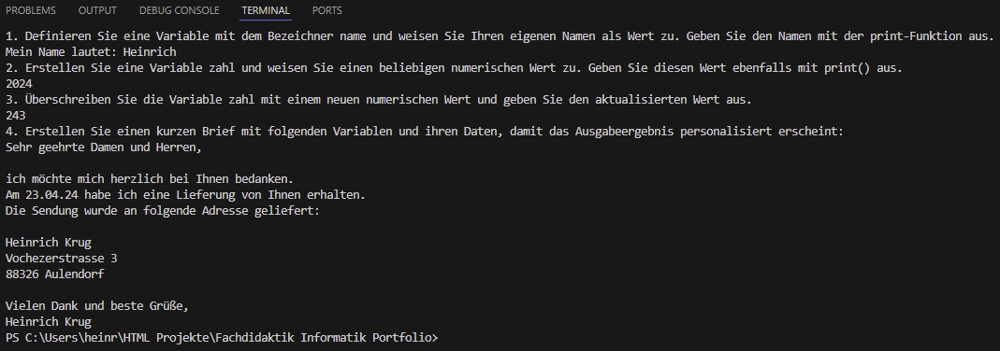

Sitzung - Thema: Programmieren
Aufgabenbeschreibung:
1. Einrichtung Ihrer Entwicklungsumgebung:
Befolgen Sie die Anleitung zur Installation von Python und Visual Studio Code, wie im Installation Tutorial beschrieben.
Das Einrichten kann auf die Schülerinnen und Schüler abstrakt wirken, wenn man die Python Installation überprüfen möchte, da an dieser Stelle keine klassische grafische Benutzeroberfläche verwendet wird.
Die Python-Erweiterung ist die Haupt-Python-Erweiterung für VS Code. Sie bietet eine breite Palette von Funktionen
wie Syntax-Hervorhebung, Code-Formatierung, IntelliSense (automatische Codevervollständigung), Linting (Code-Analyse),
Code-Snippets, und die Unterstützung für Jupyter-Notebooks. Passend zu dieser Erweiterung wird automatisch die Python
Debugger Erweiterung installiert, die Funktionen zum Debuggen von Python-Code bietet. Diese Erweiterung ermöglicht das
Setzen von Breakpoints, das Durchlaufen des Codes (Stepping), das Überwachen von Variablen und das Ausführen von
Debug-Konfigurationen.
Pylance ist ein Sprachserver für Python, der erweiterte Funktionen wie noch präzisere und schnellere IntelliSense,
Typüberprüfung (Type Checking) und erweiterte Refactoring-Möglichkeiten bietet. Hierbei arbeitet Pylance nahtlos mit der
Python-Erweiterung zusammen.
Die Installation und Einrichtung von Visual Studio Code ist bereits vor dem stattfinden der Veranstaltung erfolgt. Um in VS Code mit Python programmieren zu können, müssen noch die entsprechenden Erweiterungen installiert werden. Gerade dieser Schritt kann für Schüler herausfordernd sein, da von VS Code nicht darauf hingewiesen wird, das diese Erweiterungen installiert werden müssen, um ein Python-Projekt anzulegen. Hier wäre im Rahmen einer Unterrichtssituation eine entsprechende Kurzanleitung in Form eines Handouts von Vorteil. Eine dazugehörige Live-Coding Session in dem die Lehrkraft die Schritt für Schritt zusammen mit den Schülern die Installation durchführt würde das Verständnis verbessern. Eine Alternative wäre, das Python, VS Code und die entsprechenden Erweiterungen bereits im Voraus auf den Schulcomputern installiert werden, sodass die Schüler eine vorbereitete Lernumgebung vorfinden. So kann der Unterrichtsschwerpunkt auf die eigentliche Programmierung mit Python gelegt werden.
2. Erste Schritte mit Python:
Folgen Sie den Tutorials, um die grundlegenden Python-Konzepte zu erlernen:
Hallo Welt Tutorial

Das korrekte Speichern einer Datei mit der .py-Endung und das Navigieren im Dateisystem mittels Terminalbefehlen könnten für die Schülerinnen und Schüler komplex erscheinen. Fehlermeldungen beim Ausführen des Skripts auftauchen können, könnten verwirrend wirken. Schritt-für-Schritt-Anleitungen mit entsprechenden Screenshots könnten dabei helfen, die Schritte klarer zu machen. Auch könnte ein Unterrichtsabschnitt nützlich sein, der typische Fehlermeldungen erklärt und Lösungen anbietet. Das Verständnis von Anweisungen als grundlegende Bausteine eines Programms kann für Anfänger abstrakt sein. Das Konzept, das in Python Anweisungen nacheinander ausgeführt werden, könnte für Neulinge nicht sofort intuitiv sein. Visuelle Darstellungen in Form von Struktorgrammen, die den Programmfluss visualisieren, könnten das Verständnis erleichtern.
Print und Zahlen Tutorial und Lösungen

Programmieranfänger könnten Schwierigkeiten haben, den Unterschied zwischen der Ausgabe von Text und Zahlen zu verstehen, insbesondere die Verwendung von Anführungszeichen. Insbesondere bei fehlenden unmittelbarem Feedback könnte es schwierig werden, zu erkennen, warum bestimmte Anweisungen nicht funktionieren. Andere Plattformen oder IDE's neben VS Code, die ein sofortiges Feedback geben, könnten die Schülerinnen und Schüler dabei unterstützen, die Unterschiede zwischen Text- und Zahlenausgaben zu verdeutlichen. Die Bedeutung und Verwendung von Operatoren wie +, -, *, / und ** könnte anfangs verwirrend sein. Auch der Unterschied zwischen Punkt und Komma als Dezimaltrennzeichen könnte für Lernende verwirrend sein. Die Genauigkeit von Gleitkommazahlen und mögliche Rundungsfehler könnten Probleme bereiten. An dieser Stelle wären Erläuterungen zur Genauigkeit von Gleitkommazahlen und wie Rundungsfehler entstehen können hilfreich.
String und Variablen Tutorial und Lösung
 

Programmieranfänger könnten bei diesen Aufgabenteil Schwierigkeiten haben, die richtige Verwendung von einfachen, doppelten und dreifachen Anführungszeichen zu verstehen. Das Konzept der Verkettung von Strings mit dem Plus-Operator kann anfangs verwirrend sein, insbesondere wenn Leerzeichen nicht korrekt berücksichtigt werden. Diagramme oder Videos, die die Unterschiede zwischen den verschiedenen Arten von Anführungszeichen und ihre Anwendungen zeigen, könnten hier das Verständnis verbessern. Auch wären interaktive Aufgaben denkbar, bei denen die Lernenden verschiedene Strings erstellen und kombinieren müssen, um somit ein sofortiges Feedback über das Terminal zu erhalten. Das Verständnis, wann und wie mehrzeilige Strings verwendet werden, könnte für Anfänger schwierig sein. Auch bei der in diesem Zusammenhang miteinhergehenden korrekten Formatierung und Ausgabe kann es zu Problemen kommen. An dieser Stelle wären Beispiele hilfreich, die zeigen, wie mehrzeilige Strings in realen Anwendungen wie Dokumentationen oder Textblöcken verwendet werden. Das Verständnis der verschiedenen Operatoren zur Manipulation von Strings könnte schwierig sein. Hier wären Vergleichsbeispiele hilfreich, die zeigen, wie sich die Ausgabe ändert, wenn Leerzeichen korrekt oder falsch verwendet werden. Auch könnten Schwierigkeiten bei der Wahl sinnvoller und sprechender Bezeichner für Variablen entstehen. An dieser Stelle wären Erklärungen sinnvoll, die das Konzept der Variablen anhand von Alltagssituationen (z.B. Speicherung von Telefonnummern) veranschaulichen.
3. Weiterführende Themen für Schnelle:
Datentypen Tutorial und Lösung

Das Verständnis, wie verschiedene Operatoren auf unterschiedliche Datentypen reagieren, kann anfangs
verwirrend sein. Zum Beispiel die Verkettung von Strings mit dem Plus-Operator im Vergleich zur Addition von Ganzzahlen.
Das Erkennen und Verstehen von Fehlermeldungen, die durch die falsche Kombination von Datentypen entstehen, kann für Programmieranfänger
herausfordernd sein. Hier wären Beispiele und interaktive Übungen sinnvoll, die zeigen, wie verschiedene Datentypen funktionieren
und wie sie korrekt verwendet werden.
Beim Berechnen der Werte verschiedenen Währungen, kann es herausfordernd sein zu verstehen, wie die Umrechnungskurse verwendet werden,
um Beträge von einer Währung in eine andere zu konvertieren. Auch die dazugehörige Formatierung der Ausgabe, um klares und lesbares Ergebniss zu erzielen
kann zu Problemen oder Schwierigkeiten führen. Eine detaillierte Anleitung, die den Prozess der Währungsumrechnung erklärt könnte den Lernprozess
unterstützen.
Input Tutorial und Lösung
Die Schülerinnen und Schüler könnten möglicherweise Schwierigkeiten damit haben, Eingaben mit den richtigen Datentypen zu verarbeiten. Standardmäßig liefert input() immer einen String zurück, was bei mathematischen Operationen problematisch sein kann. Das unerwartete eingeben von beispielsweise Text anstelle von Zahlen könnte Fehler verursachen. Die Schüler müssen lernen, wie man solche Eingaben validiert und behandelt. Auch kann die Erstellung von formatierten Ausgaben mit Platzhaltern wie {} zu Schwierigkeiten führen. In diesem Zusammenhang wäre es sinnvoll den Schülern entsprechende Best Practice Beispiele für die Gestaltung von Benutzerfragen und Ausgaben zu präsentieren.
4. Reflexion und Dokumentation der Herausforderungen:
Nach jedem wesentlichen Schritt oder Kapitel im Tutorial, notieren Sie spezifisch die Herausforderungen, die Sie während des Prozesses erlebt haben. Überlegen Sie, welche Aspekte für Programmieranfänger besonders schwierig sein könnten und formulieren Sie Vorschläge, wie diese Herausforderungen minimiert oder effektiver vermittelt werden könnten. -> siehe Aufgaben
5. Didaktische Reflexion:
Überlegen Sie, an welchen Stellen ein reines schriftliches Tutorial möglicherweise an seine Grenzen
stößt und ein anderes Medium effektiver wäre. Reflektieren Sie, in welchen Situationen die Lehrkraft
intervenieren oder zusätzliche Inputs geben müsste, insbesondere im Hinblick auf Schüler. Erörtern Sie den
Einsatz von KI-Technologien wie ChatGPT und dokumentieren Sie, wo der Einsatz von KI im Bildungskontext
Vorteile bringen könnte und wo mögliche Nachteile liegen.
Komplexe Konzepte und Fehlermeldungen können in einem rein schriftlichen Format schwer zu vermitteln und zu verstehen sein.
Auch könnte die fehlende Interaktivität dazu führen, dass Lernende weniger engagiert sind und sich nicht ausreichend unterstützt fühlen.
Video-Tutorials können komplexe Schritte und Konzepte visuell erklären und demonstrieren.
Interaktive Lernplattformen, wie z.B. Codecademy bieten interaktive Übungen und sofortiges Feedback. Lernspiele und Quizze könnten die
Interaktivität steigern, sodass das Engagement und die Motivation der Lernenden erhöht wird.Lehrkräfte sollten bei komplexen Themen,
Fehlermeldungen und individuellen Schwierigkeiten die Schüler aktiv unterstützen. Regelmäßiges Feedback und persönliche Unterstützung sind wichtig,
um Frustration zu vermeiden und das Verständnis für die Lerninhalte zu vertiefen.
Einige mathematische Konzepte und ihre Implementierung in Python könnten schwer schriftlich zu vermitteln sein. Ein schriftliches Tutorial
eigebettet in einem Arbeitsblatt bietet kein sofortiges Feedback, was für die Fehlerbehebung und das Verständnis von
grundlegenden Konzepten wichtig ist. Video-Tutorials, die die Schritte und Konzepte mit visueller Unterstützung erklären, könnten das Verständnis verbessern.
6. Austausch und Diskussion am Kursende:
Am Ende des Kurses nehmen Sie an einer Diskussionsrunde teil, in der Sie Ihre Erfahrungen teilen und gemeinsam
mit Ihren Kommiliton*innen über mögliche Verbesserungen in der Lehrmethode und die Anpassung der Inhalte für
den schulischen Gebrauch diskutieren.
Das Konzept der Typkonvertierung bei Benutzereingaben war für mich und meine Kommilitonen teilweise schwierig zu verstehen. Hilfreich
war, dass alle Studierende bereits in Python oder in Java grundlegende Erkenntnisse erworben haben, sodass die Einarbeitungsphase in großen
Teilen reibungslos verlaufen ist.
Mir half es, externe Ressourcen wie Video-Tutorials zu nutzen, um komplexe Themen besser zu verstehen. Einige der schriftlichen Anleitungen könnten
durch Videos ergänzt werden, um visuelle Lerntypen besser anzusprechen.„Einführungsvideos" für jede Lektion könnten den Lernenden helfen, sich schnell
einen Überblick zu verschaffen. Zudem wäre es hilfreich, wenn die Lehrkraft zusätzliche Übungen und Beispiele bereitstellen, die auf die Interessen der
Schüler zugeschnitten sind. Die Nutzung von KI könnte eine personalisierte Lernunterstützung bieten und rund um die Uhr die Fragen der Schüler beantworten.
Ein Nachteil könnte hiebei die fehlende menschliche Interaktion und das Risiko falscher oder unvollständiger Antworten sein.